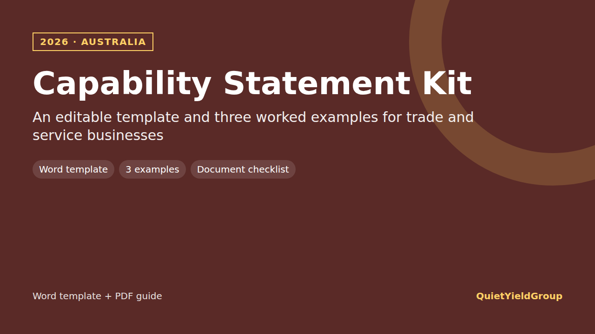

Editable one- and two-page Word template, a short guide and three filled-in examples for council, government and commercial work
A$15 · instant download
A capability statement is the short business résumé buyers ask for with tenders, invited quotes, supplier panels and head contractor prequalification. Queensland's state development department calls it "like a resume for your business". Buyers use it to decide whether you can do the job.
This kit gives you an editable Word template with two layouts: one page for introductions and supplier profiles, two pages for tenders and panels. A short guide explains each section: what to put in, what to leave out, and how to back every line with a document. It covers licences, insurances with sums insured, WHS and quality systems, key people, plant, three project case studies, referees, and a local and small business statement you can prove.
Three filled-in fictional examples show the finished result: an electrician, a commercial cleaner, and a landscape and civil firm.
Written for Australian tradies, builders, cleaners, landscapers, and civil and maintenance firms with 1 to 20 staff. Quotes come from official government sources. Many rule examples are from Queensland, so check your own state's requirements. General information, not legal advice. Current as of 18 November 2026.